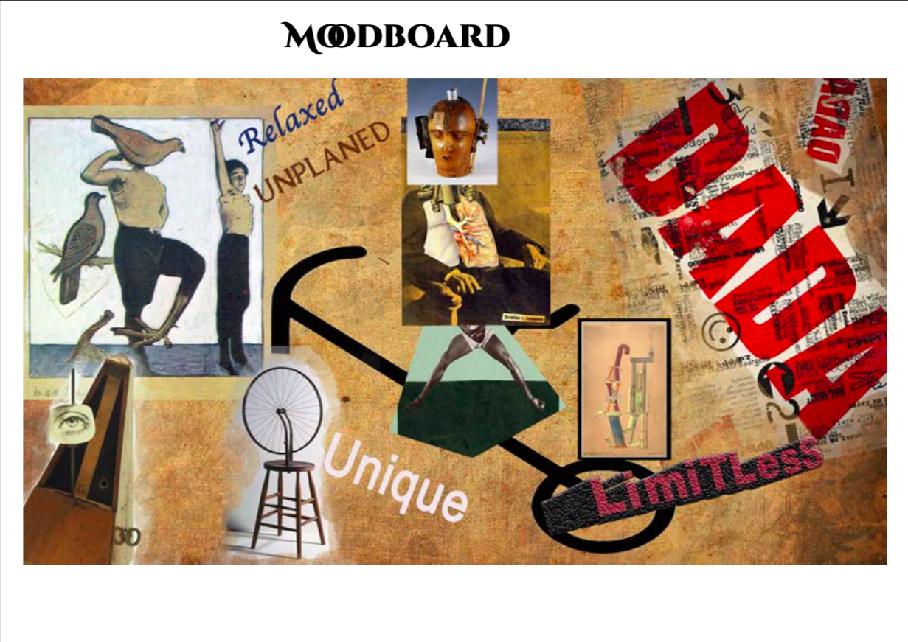
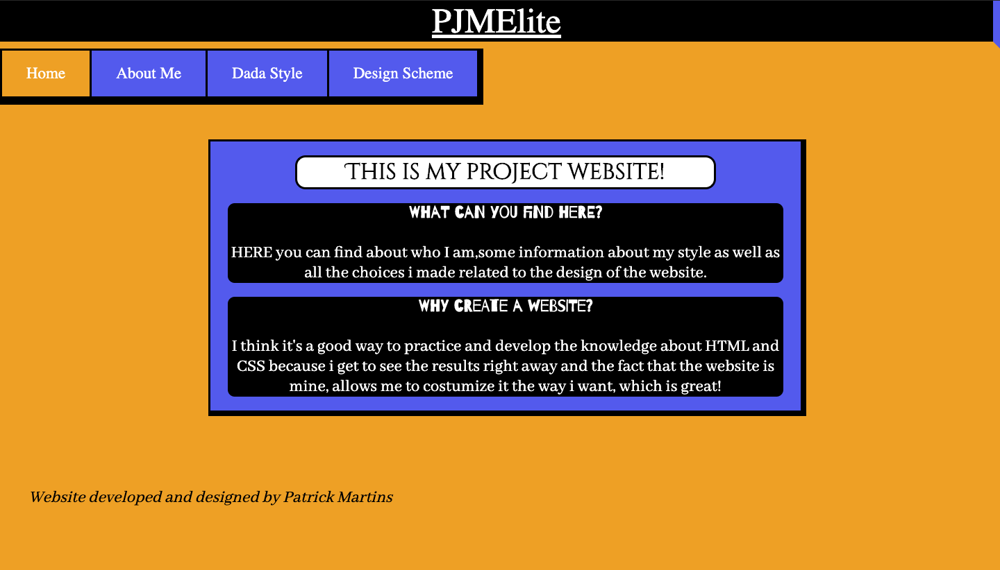
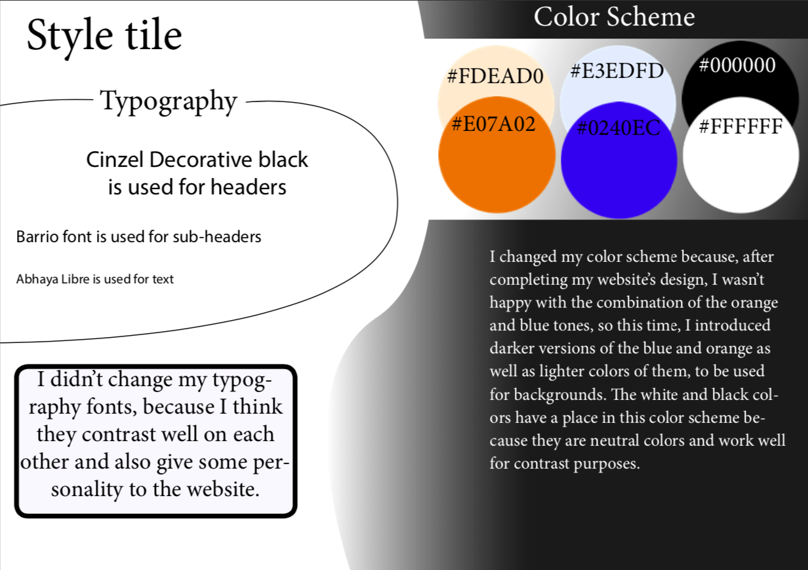
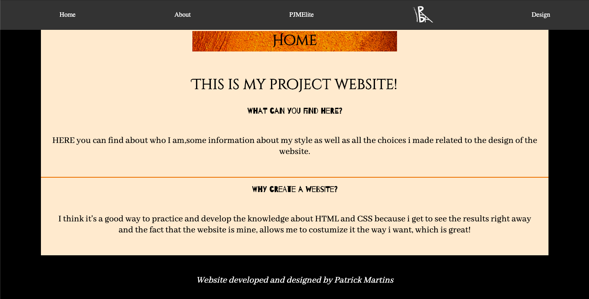

01.01.02 Dada Project Document
 > At the beginning of the Basic Web theme I was given a style that I had to research on and collect relevant content about.
I also had to choose a typography style and present a style tile for the website I was later going to develop.
01.02.01 My First Basic Mobile Website
In this assignment I developed my first website with the basic coding knowledge I had acquired until then.
01.03.01 Responsive Website Process Document

> This assignment consisted on improving my first website's design choices. This was accomplished by changing the style tile and developing a prototype on Adobe XD, that was later tested as a "trunk test" by fellow students from my class. All this process was documented on a pdf file that can be accessed by pressing the corresponding image.
To end this theme, I worked on making my website responsive and applied the design changes that were prototyped and tested on the previous assignment.
01.04.01 Responsive Website
> To end this theme, I worked on making my website responsive and applied the design changes that were prototyped and tested on the previous assignment.